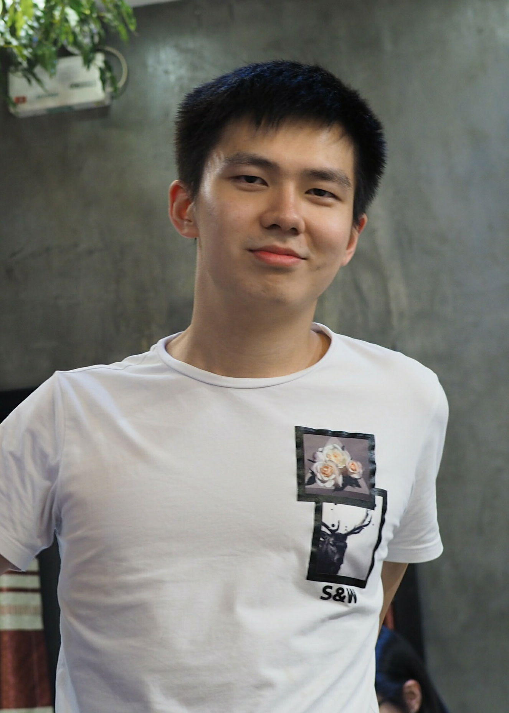

Yuting Xiao(肖宇廷)

Introduction
Master at ShanghaiTech UniversityEmail: xiaoyt@shanghaitech.edu.cn
Advised by Prof. Shenghua Gao
Research Interests
About Me
I am a two-year Master in reading at the School of Information Science and Technology at ShanghaiTech University, supervised by Prof. Shenghua Gao.I am interested in computer vision and deep learning, especially medical imaging, anomaly detection, segmentation, etc. Before coming to ShanghaiTech University, I received a BEng. Degree from Hunan University.News
[2020/08/09] 1 paper is accepted by ECCV 2020 .[2020/01/07] 1 paper is accepted by ISBI 2020 .
[2019/09/20] 1 paper is accepted by TMI .
[2019/08/14] 1 paper is accepted by MICCAI 2019 .